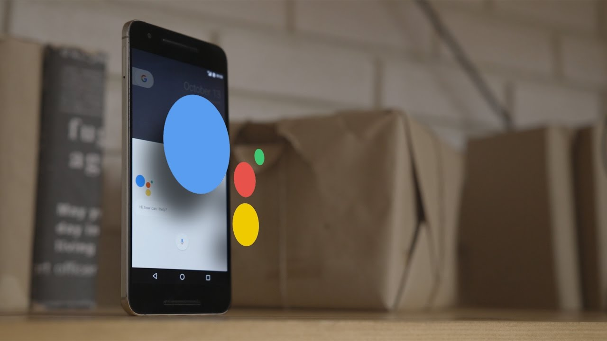

Англомовний додаток-гід Creativity of Mr Shevchenko був створений для музею Тараса Шевченка у м. Вінниці. У сучасному світі молоді не цікаво відвідувати музеї, і для того щоб привернути увагу молоді був створений інтерактивний гід. Додаток було розроблено на основі Google Assistant, і працює він як усім відомий голосовий помічник - Siri. Отже гості музею відсканувавши QR-код з легкістю переходять на сторінку додатку, і далі вони можуть запитати у інтерактивного екскурсовода будь-яке із запропонованих питань. Зараз программа налічує 15 запитань по таких темах як : біографія Т. Шевченка, експонати музею , та цікаві факти про Кобзаря.
Чи мріяли ви коли-небудь про власний персональному помічника? Зовсім не про прислугу, яка буде робити замість вас найважчу і брудну роботу, наприклад по дому, а про асистент, який буде здатний підказати відповідь на питання, що цікавить або вчасно знайти інформацію про важливу проблему. Напевно у кожного з нас колись відбувалася ситуація, при якій нам потрібно знайти фотографію або інформацію в інтернеті, але зробити це не виходить.
Безумовно, все вже давно і так розвивається до того, щоб полегшити наше життя у всіх її проявах. Тому і в цій сфері розумних пристроїв у нас з'явилася можливість користуватися допомогою голосового помічника Google Assistant. З'явився він не так давно, але вже зараз його можна активно використовувати, а ми розберемося в тому, де саме він зможе виявитися корисним.
Помічник може використовуватися в смартфонах, також він включений в Google Allo - додаток для миттєвого обміну повідомленнями, Google Home - розумний голосової Wi-Fi динамік для управління вашим будинком, Android Wear - розумні годинник від Google.
У грудні 2016 року Google запустив «Actions on Google», платформу для розробників для Google Assistant. Actions on Google дозволяє стороннім розробникам створювати додатки для Google Assistant. У березні 2017 року Google додав нові інструменти для розробки в Actions on Google, щоб підтримати створення ігор для Google Assistant. Спочатку обмежений розумним динаміком Google Home, Actions on Google був доступний для пристроїв Android і iOS травнем 2017 року тоді ж Google також представив каталог додатків для огляду сумісних продуктів і послуг. Щоб стимулювати розробників до створення Actions, Google оголосив конкурс, в якому за перше місце були виграні квитки на конференцію розробників Google 2018 року, 10 000 доларів США та відвідування кампусу Google, а за друге і третє місця було отримано 7 500 і 5 000 доларів США відповідно. і Google Home.
У квітні 2017 року було випущено комплект для розробки програмного забезпечення (SDK), що дозволяє стороннім розробникам створювати власне обладнання, на якому можна запускати Google Assistant. Він був інтегрований в Raspberry Pi, автомобілі Audi і Volvo, і розумну побутову техніку, включаючи холодильники, пральні машини і духовки, від компаній, включаючи iRobot, LG, General Electric і D-Link. Google оновив SDK в грудні 2017 року, додавши кілька функцій, які раніше підтримувалися тільки інтелектуальними динаміками Google Home і додатками для смартфонів Google Assistant.
Можливості включають:
2 травня 2018 року Google анонсував у своєму блозі нову програму, яка фокусується на інвестуванні в майбутнє Google Assistant через стартапи на ранніх стадіях. Їх метою було створення середовища, в якій розробники могли б створювати більш багатий досвід для своїх користувачів. Сюди входять стартапи, які розширюють можливості Assistant, створюють нові апаратні пристрої або просто виділяються в різних галузях.

"- я завжди хотіла йти в ногу з інноваціями, мене цікавили новітні технології, різноманітні девайси,
програми ,
ігри та штучний інтелект"
Я - Шарай Анастасія , студентка ВНТУ. Мені пощастило взяти участь у проекті “Агенти Змін” і саме це стало
поштовхом до здійснення моєї мрії. Проект Creativity of Mr Shevchenko був продемонстрований на багатьох заходах
, висвітлений у газеті та надрукований у книзі “Історія успіху”.